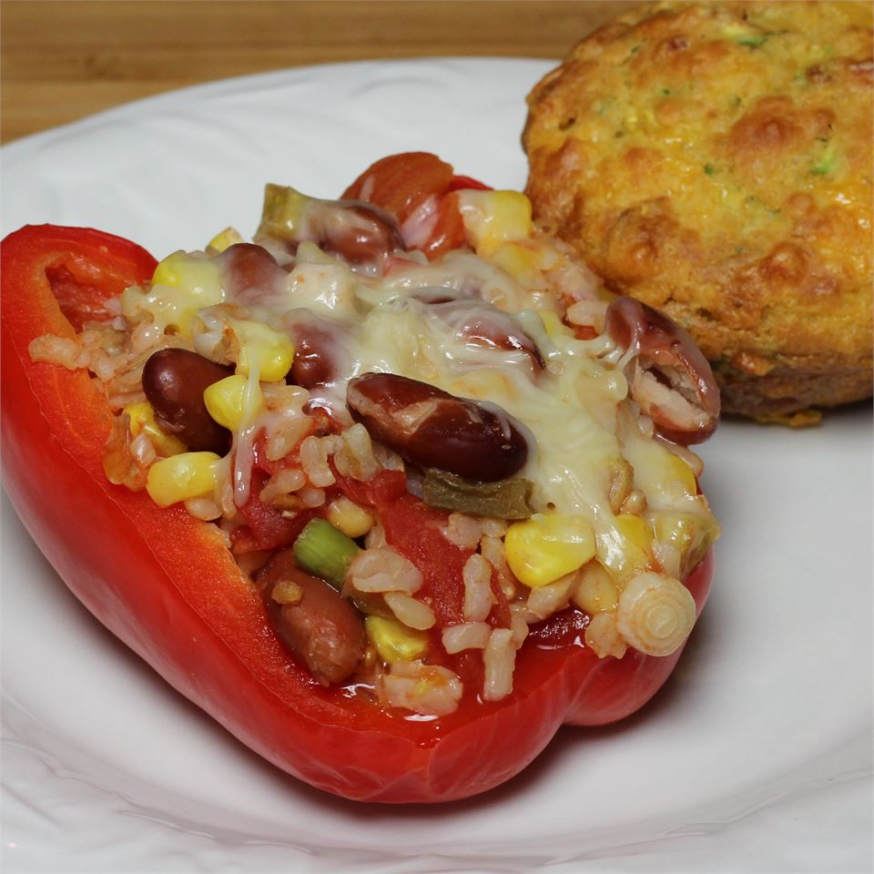

Microwavable Stuffed Peppers

Description
This microwave recipe is quick and very simple, and is a good meal for a busy work week. You can use any color peppers you like.
Try using garbanzos instead of the kidney beans for a variation on this recipe.
Ingredients
- 2 Large Red Bell Peppers (Halved and Seeded)
- 1 CAN Stewed Tomatoes (With Liquid)
- ⅓ CUP Quick-Cooking Brown Rice
- 2 TBSP Hot Water
- 2 Green Onions (Thinly Sliced)
- ½ cup frozen corn kernels (Thawed and Drained)
- ½ CAN Kidney Beans (Drained and Rinsed)
- ¼ TSP Crushed Red Pepper Flakes
- ½ CUP Shredded Mozzarella Cheese
- 1 TBSP Grated Parmesan Cheese
Steps
- Arrange pepper halves in a 9 inch square glass baking dish. Cover dish with plastic wrap. Poke a few holes in the plastic wrap for vents, and heat 4 minutes in the microwave, or until tender.
- In a medium bowl, mix tomatoes and their liquid, rice, and water. Cover with plastic, and cook in the microwave for 4 minutes, or until rice is cooked.
- Stir green onions, corn, kidney beans, and red pepper flakes into the tomato mixture. Heat in the microwave for 3 minutes, or until heated through.
- Spoon hot tomato mixture evenly into pepper halves, and cover with plastic wrap. Poke a few holes in the plastic to vent steam, and heat in the microwave 4 minutes. Remove plastic, sprinkle with mozzarella cheese and Parmesan cheese, and allow to stand 1 to 2 minutes before serving.